JEE Main 2024 (Session 1), 30 Jan Shift 1: worked solutions for review
Questions and options are NTA’s own images; the green option is NTA’s final key. Every solution below was written by Claude
and checked against NTA’s final key. It is not NTA’s solution. Please mark anything unclear or wrong.
Q1 · Mathematics · MCQ · ID 533543827
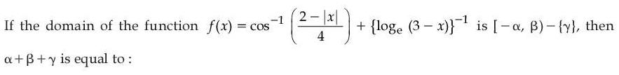
(1) 
(2) 
(3) 
(4) 
Hint 1: Write the condition for each part: cos−1 needs its input in [−1, 1]; the reciprocal of a log needs the log defined and non-zero.
Hint 2: −1 ≤ (2 − |x|)/4 ≤ 1 gives |x| ≤ 6. loge(3 − x) needs x < 3, and loge(3 − x) ≠ 0 needs x ≠ 2.
What this tests: Domain of a function (inverse trig and logarithm).
1. Domain = [−6, 3) − {2}.
2. α = 6, β = 3, γ = 2: sum 11.
Answer: (3)
If this felt hard: Revise 'Relations and Functions' and 'Inverse Trigonometric Functions' (domains).
Claude’s answer: 3 · NTA final key: 3 · agrees · Answer recomputed with SymPy (tools/verify_pyq_solutions.py)
Q2 · Mathematics · MCQ · ID 533543828
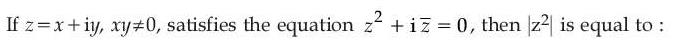
(1) 
(2) 
(3) 
Hint 1: Put z = x + iy and separate real and imaginary parts.
Hint 2: z² + i z̄ = (x² − y² + y) + i(2xy + x) = 0.
What this tests: Solving complex equations by separating parts.
1. Imaginary part: x(2y + 1) = 0 and x ≠ 0, so y = −1/2.
2. Real part: x² − 1/4 − 1/2 = 0, so x² = 3/4.
3. |z|² = 3/4 + 1/4 = 1, so |z²| = 1.
Answer: (2)
If this felt hard: Revise 'Complex Numbers'.
Claude’s answer: 2 · NTA final key: 2 · agrees · Answer recomputed with SymPy (tools/verify_pyq_solutions.py)
Q3 · Mathematics · MCQ · ID 533543829
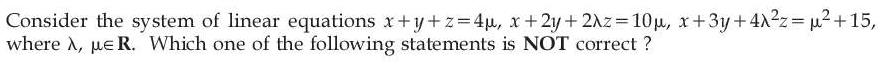
Hint 1: Find when the coefficient determinant is zero. Then check consistency in that case.
Hint 2: det = (2λ − 1)². With λ = 1/2, subtract equations: y = 6μ and y = μ² + 15 − 10μ.
What this tests: Consistency of linear systems.
1. λ ≠ 1/2: unique solution for every μ (so statements 1 and 3 are correct).
2. λ = 1/2: consistent only if μ² − 16μ + 15 = 0, i.e. μ = 1 or 15 (then infinitely many solutions; statement 4 is correct).
3. Statement 2 says 'inconsistent if λ = 1/2 and μ ≠ 1', but μ = 15 is consistent. Statement 2 is NOT correct.
Answer: (2)
If this felt hard: Revise 'Determinants'.
Claude’s answer: 2 · NTA final key: 2 · agrees · Answer recomputed with SymPy (tools/verify_pyq_solutions.py)
Q4 · Mathematics · MCQ · ID 533543830
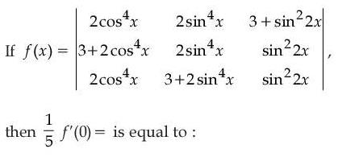
(2) 
(3) 
(4) 
Hint 1: Do row operations before expanding: subtract row 1 from rows 2 and 3.
Hint 2: R2 − R1 = (3, 0, −3) and R3 − R1 = (0, 3, −3). Then 2cos⁴x + 2sin⁴x + sin²2x = 2(sin²x + cos²x)² = 2.
What this tests: Determinants with row operations; trigonometric identity.
1. f(x) = 9(2cos⁴x + 2sin⁴x + sin²2x + 3) = 9 × 5 = 45, a constant.
2. f'(0) = 0.
Answer: (1)
If this felt hard: Revise 'Determinants'. Simplify before differentiating.
Claude’s answer: 1 · NTA final key: 1 · agrees · Answer recomputed with SymPy (tools/verify_pyq_solutions.py)
Q5 · Mathematics · MCQ · ID 533543831
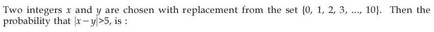
Hint 1: Count ordered pairs (x, y) with |x − y| ≥ 6.
Hint 2: For a difference d (6 to 10) there are 11 − d pairs with x − y = d; double for y − x = d.
What this tests: Classical probability by counting.
1. 5 + 4 + 3 + 2 + 1 = 15 pairs with x > y; 30 in total.
2. Probability = 30/121.
Answer: (2)
If this felt hard: Revise 'Probability'.
Claude’s answer: 2 · NTA final key: 2 · agrees · Answer recomputed with SymPy (tools/verify_pyq_solutions.py)
Q6 · Mathematics · MCQ · ID 533543832
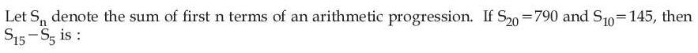
Hint 1: Write S10 and S20 with a and d, solve, then compute.
Hint 2: Sn = (n/2)(2a + (n − 1)d). 2a + 9d = 29 and 2a + 19d = 79.
What this tests: Sum of an AP.
1. d = 5, a = −8.
2. S15 = 7.5 × 54 = 405, S5 = 2.5 × 4 = 10.
3. S15 − S5 = 395.
Answer: (2)
If this felt hard: Revise 'Sequences and Series'.
Claude’s answer: 2 · NTA final key: 2 · agrees · Answer recomputed with SymPy (tools/verify_pyq_solutions.py)
Q7 · Mathematics · MCQ · ID 533543833
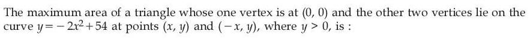
Hint 1: The triangle has base 2x and height y. Write its area in x alone.
Hint 2: Area = (1/2)(2x)(54 − 2x²) = 54x − 2x³.
What this tests: Maximum area using derivatives.
1. d/dx: 54 − 6x² = 0, so x = 3.
2. Area = 162 − 54 = 108.
Answer: (2)
If this felt hard: Revise 'Application of Derivatives'.
Claude’s answer: 2 · NTA final key: 2 · agrees · Answer recomputed with SymPy (tools/verify_pyq_solutions.py)
Q8 · Mathematics · MCQ · ID 533543834
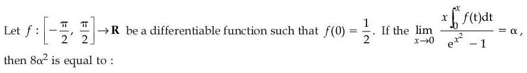
(1) 
(2) 
(3) 
Hint 1: For small x, ∫0x f(t) dt ≈ x f(0) and ex² − 1 ≈ x².
Hint 2: Or use L'Hôpital: the limit becomes f(0).
What this tests: Limits with an integral (Leibniz rule).
1. α = x × x f(0)/x² → f(0) = 1/2.
2. 8α² = 2.
Answer: (2)
If this felt hard: Revise 'Limits and Derivatives' and 'Integrals'.
Claude’s answer: 2 · NTA final key: 2 · agrees · Answer recomputed with SymPy (tools/verify_pyq_solutions.py)
Q9 · Mathematics · MCQ · ID 533543835
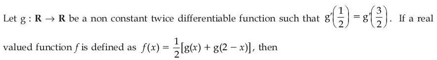
Hint 1: Differentiate f and find where f' = 0. Then think of Rolle's theorem for f'.
Hint 2: f'(x) = (1/2)[g'(x) − g'(2 − x)]. Check x = 1/2, 1 and 3/2.
What this tests: Rolle's theorem applied to a derivative.
1. f'(1) = 0, and f'(1/2) = f'(3/2) = (1/2)(±(g'(1/2) − g'(3/2))) = 0.
2. f' vanishes at 1/2, 1, 3/2, so by Rolle f'' = 0 somewhere in (1/2, 1) and in (1, 3/2).
3. f'' = 0 for at least two x in (0, 2).
Answer: (1)
If this felt hard: Revise 'Continuity and Differentiability' (Rolle's theorem).
Claude’s answer: 1 · NTA final key: 1 · agrees · Answer recomputed with SymPy (tools/verify_pyq_solutions.py)
Q10 · Mathematics · MCQ · ID 533543836
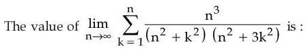
Hint 1: Divide numerator and denominator by n⁴ and look for (1/n) Σ f(k/n).
Hint 2: The sum becomes (1/n)Σ 1/((1 + t²)(1 + 3t²)) with t = k/n, i.e. ∫01 dt/((1 + t²)(1 + 3t²)). Split into partial fractions.
What this tests: Limit of a sum as a definite integral.
1. 1/((1 + t²)(1 + 3t²)) = −(1/2)/(1 + t²) + (3/2)/(1 + 3t²).
2. Integral = −π/8 + (3/2)(1/√3)(π/3) = π(4√3 − 3)/24.
3. 13π/(8(4√3 + 3)) = 13π(4√3 − 3)/(8 × 39) = π(4√3 − 3)/24, the same.
Answer: (4)
If this felt hard: Revise 'Integrals' (definite integral as the limit of a sum, partial fractions).
Claude’s answer: 4 · NTA final key: 4 · agrees · Answer recomputed with SymPy (tools/verify_pyq_solutions.py)
Q11 · Mathematics · MCQ · ID 533543837
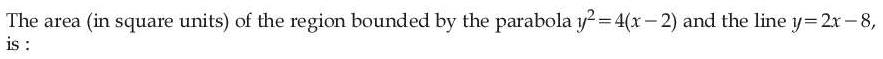
(1) 
(2) 
(3) 
(4) 
Hint 1: Write both curves as x in terms of y and find where they meet.
Hint 2: Line: x = (y + 8)/2. Parabola: x = y²/4 + 2. They meet where y² − 2y − 8 = 0.
What this tests: Area between a parabola and a line.
1. y = −2 and y = 4.
2. Area = ∫−24 (y/2 + 2 − y²/4) dy = [y²/4 + 2y − y³/12] from −2 to 4.
3. = 20/3 − (−7/3) = 9.
Answer: (4)
If this felt hard: Revise 'Application of Integrals'.
Claude’s answer: 4 · NTA final key: 4 · agrees · Answer recomputed with SymPy (tools/verify_pyq_solutions.py)
Q12 · Mathematics · MCQ · ID 533543838
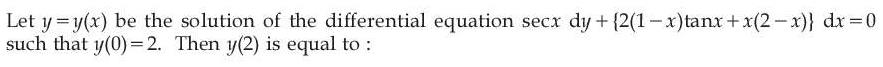
(1) 
(2) 
Hint 1: Multiply through by cos x. Is the right side an exact derivative of something?
Hint 2: dy/dx = −[2(1 − x) sin x + x(2 − x) cos x] = −d/dx[x(2 − x) sin x].
What this tests: Variable separable differential equation (spotting a product rule).
1. y = −x(2 − x) sin x + C, and y(0) = 2 gives C = 2.
2. y(2) = 0 + 2 = 2.
Answer: (2)
If this felt hard: Revise 'Differential Equations'.
Claude’s answer: 2 · NTA final key: 2 · agrees · Answer recomputed with SymPy (tools/verify_pyq_solutions.py)
Q13 · Mathematics · MCQ · ID 533543839
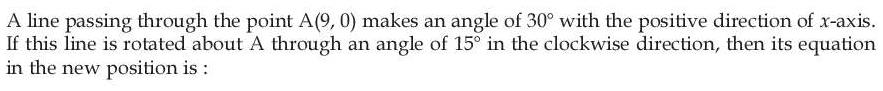
Hint 1: Rotating clockwise by 15° changes the angle from 30° to 15°.
Hint 2: tan 15° = 2 − √3. Line through (9, 0): y = (2 − √3)(x − 9).
What this tests: Equation of a line; tan 15°.
1. y/(2 − √3) = x − 9, i.e. x − y/(2 − √3) = 9.
2. This is y/(√3 − 2) + x = 9.
Answer: (1)
If this felt hard: Revise 'Straight Lines'.
Claude’s answer: 1 · NTA final key: 1 · agrees · Answer recomputed with SymPy (tools/verify_pyq_solutions.py)
Q14 · Mathematics · MCQ · ID 533543840
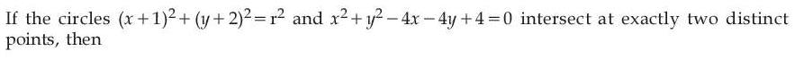
(4)
Hint 1: Two circles cut at two points when |r1 − r2| < d < r1 + r2.
Hint 2: Second circle: centre (2, 2), radius 2. Distance between centres (−1, −2) and (2, 2) is 5.
What this tests: Intersection of two circles.
1. |r − 2| < 5 < r + 2.
2. r > 3 and r < 7: 3 < r < 7.
Answer: (3)
If this felt hard: Revise 'Conic Sections' (circle).
Claude’s answer: 3 · NTA final key: 3 · agrees · Answer recomputed with SymPy (tools/verify_pyq_solutions.py)
Q15 · Mathematics · MCQ · ID 533543841
(1)
(2)
(3)
(4)
Hint 1: Minor axis = 2b; distance between foci = 2ae.
Hint 2: 2b = ae, so b² = a²e²/4. Also b² = a²(1 − e²).
What this tests: Eccentricity of an ellipse.
1. 1 − e² = e²/4, so e² = 4/5.
2. e = 2/√5.
Answer: (1)
If this felt hard: Revise 'Conic Sections'.
Claude’s answer: 1 · NTA final key: 1 · agrees · Answer recomputed with SymPy (tools/verify_pyq_solutions.py)
Q16 · Mathematics · MCQ · ID 533543842
(1)
(2)
(3)
(4) 
Hint 1: Write a general point of the line with a parameter t; the vector from (1, 2, 3) to it is perpendicular to (5, 2, 3).
Hint 2: Point: (−3 + 5t, 1 + 2t, −4 + 3t).
What this tests: Foot of the perpendicular to a line.
1. (−4 + 5t)5 + (−1 + 2t)2 + (−7 + 3t)3 = 38t − 43 = 0, so t = 43/38.
2. α + β + γ = −6 + 10t = 202/38.
3. 19(α + β + γ) = 101.
Answer: (3)
If this felt hard: Revise 'Three Dimensional Geometry'.
Claude’s answer: 3 · NTA final key: 3 · agrees · Answer recomputed with SymPy (tools/verify_pyq_solutions.py)
Q17 · Mathematics · MCQ · ID 533543843
(1)
(2)
(3)
(4)
Hint 1: Area of a parallelogram from its diagonals = (1/2)|d1 × d2|.
Hint 2: AC = (−5, 1, −7) and BD = (1, 2, 3).
What this tests: Area of a parallelogram with vectors.
1. AC × BD = (17, 8, −11), length √474.
2. Area = (1/2)√474.
Answer: (1)
If this felt hard: Revise 'Vector Algebra'.
Claude’s answer: 1 · NTA final key: 1 · agrees · Answer recomputed with SymPy (tools/verify_pyq_solutions.py)
Q18 · Mathematics · MCQ · ID 533543844
(1)
(2)
(3)
(4)
Hint 1: a × b is perpendicular to b. Use that to get b·c and |c|.
Hint 2: b·c = −3|b|². |a × b|² = |a|²|b|² − (a·b)² = 12. |c|² = 4|a × b|² + 9|b|².
What this tests: Dot and cross products; angle between vectors.
1. b·c = −48. |c|² = 48 + 144 = 192, |c| = 8√3.
2. cos θ = −48/(4 × 8√3) = −√3/2.
Answer: (1)
If this felt hard: Revise 'Vector Algebra' (Lagrange's identity).
Claude’s answer: 1 · NTA final key: 1 · agrees · Answer recomputed with SymPy (tools/verify_pyq_solutions.py)
Q19 · Mathematics · MCQ · ID 533543845
(1)
(2)
(3)
(4)
Hint 1: Find N/2 and the class where the cumulative frequency first passes it.
Hint 2: N = 36, N/2 = 18. Cumulative: 3, 12, 22, … so the median class is 8–12. M = l + ((N/2 − cf)/f) × h.
What this tests: Median of grouped data.
1. M = 8 + ((18 − 12)/10) × 4 = 10.4.
2. 20M = 208.
Answer: (3)
If this felt hard: Revise 'Statistics'.
Claude’s answer: 3 · NTA final key: 3 · agrees · Answer recomputed with SymPy (tools/verify_pyq_solutions.py)
Q20 · Mathematics · MCQ · ID 533543846
(1)
(2)
(3)
(4)
Hint 1: Write sin 2x cos x = 2 sin x cos²x = 2 sin x (1 − sin²x) and simplify.
Hint 2: The equation becomes 6 sin x − 4 = 0, so sin x = 2/3. Count solutions as the interval [0, nπ/2] grows.
What this tests: Trigonometric equations; signs of roots of a quadratic.
1. Solutions lie in (0, π/2), (π/2, π), (2π, 5π/2), (5π/2, 3π), …
2. Exactly 3 solutions needs nπ/2 = 5π/2, so n = 5.
3. x² + 5x + 2 = 0 has roots (−5 ± √17)/2, both negative: they lie in (−∞, 0).
Answer: (3)
If this felt hard: Revise 'Trigonometric Functions' and 'Quadratic Equations'.
Claude’s answer: 3 · NTA final key: 3 · agrees · Answer recomputed with SymPy (tools/verify_pyq_solutions.py)
Q21 · Mathematics · Numerical · ID 533543847
Hint 1: For each a, how many subsets of A contain a?
Hint 2: f(a) must be a subset containing a: choose any subset of the other 6 elements, 2⁶ ways.
What this tests: Counting functions with a condition; power set.
1. Number of functions = (2⁶)⁷ = 242.
2. Least m is 2, so n = 42 and m + n = 44.
Answer: 44
If this felt hard: Revise 'Relations and Functions' and 'Sets'.
Claude’s answer: 44 · NTA final key: 44 · agrees · Answer recomputed with SymPy (tools/verify_pyq_solutions.py)
Q22 · Mathematics · Numerical · ID 533543848
Hint 1: α + β = 70 and αβ = λ. To make λ small, make one root small. Which small choices make λ divisible by 2 or 3?
Hint 2: Try α = 1, 2, 3, 4, 5: λ = 69, 136, 201, 264, 325.
What this tests: Roots and coefficients with divisibility conditions.
1. 69, 201 are divisible by 3; 136, 264 are even. λ = 325 (roots 5 and 65) is the least allowed.
2. (√64 + √4)(325 + 35)/60 = 10 × 360/60 = 60.
Answer: 60
If this felt hard: Revise 'Quadratic Equations'.
Claude’s answer: 60 · NTA final key: 60 · agrees · Answer recomputed with SymPy (tools/verify_pyq_solutions.py)
Q23 · Mathematics · Numerical · ID 533543849
Hint 1: Write the general term. When are both powers 7(824−r)/2 and 11r/6 integers?
Hint 2: Tr+1 = C(824, r) 7(824 − r)/2 11r/6. Need r divisible by 6 and 824 − r even.
What this tests: Integral terms in a binomial expansion.
1. r = 0, 6, 12, …, 822 (r divisible by 6 is automatically even).
2. Count = 822/6 + 1 = 138.
Answer: 138
If this felt hard: Revise 'Binomial Theorem'.
Claude’s answer: 138 · NTA final key: 138 · agrees · Answer recomputed with SymPy (tools/verify_pyq_solutions.py)
Q24 · Mathematics · Numerical · ID 533543850
Hint 1: The terms 1, 4, 8, 13, 19, 26 have differences 3, 4, 5, 6, 7. Find a formula for the n-th base number.
Hint 2: Tn = (n² + 3n − 2)/2, so 4Tn² = n⁴ + 6n³ + 5n² − 12n + 4.
What this tests: Series with second differences constant; Σn³, Σn².
1. 4α − β = Σ(6n³ + 5n² − 12n + 4) for n = 1 to 10.
2. = 6 × 3025 + 5 × 385 − 12 × 55 + 40 = 19455.
3. 55k + 40 = 19455, so k = 353.
Answer: 353
If this felt hard: Revise 'Sequences and Series'.
Claude’s answer: 353 · NTA final key: 353 · agrees · Answer recomputed with SymPy (tools/verify_pyq_solutions.py)
Q25 · Mathematics · Numerical · ID 533543851
Hint 1: √(10x/(x + 1)) goes from 0 up to 3 on [0, 9]. Find where it crosses 1 and 2.
Hint 2: 10x/(x + 1) = 1 at x = 1/9 and = 4 at x = 2/3. It reaches 9 only at x = 9.
What this tests: Integral of a greatest integer function.
1. Integral = 1 × (2/3 − 1/9) + 2 × (9 − 2/3) = 5/9 + 50/3 = 155/9.
2. 9 × 155/9 = 155.
Answer: 155
If this felt hard: Revise 'Integrals' (definite integrals with [x]).
Claude’s answer: 155 · NTA final key: 155 · agrees · Answer recomputed with SymPy (tools/verify_pyq_solutions.py)
Q26 · Mathematics · Numerical · ID 533543852
Hint 1: Write it as a linear equation dy/dx + P(x)y = Q(x).
Hint 2: P = −x/(1 − x²), so the integrating factor is √(1 − x²). Then (y√(1 − x²))' = √3(x³ + 2).
What this tests: Linear differential equation.
1. y√(1 − x²) = √3(x⁴/4 + 2x) + C, and y(0) = 0 gives C = 0.
2. x = 1/2: y(√3/2) = √3(1/64 + 1), so y = 65/32.
3. m + n = 97.
Answer: 97
If this felt hard: Revise 'Differential Equations'.
Claude’s answer: 97 · NTA final key: 97 · agrees · Answer recomputed with SymPy (tools/verify_pyq_solutions.py)
Q27 · Mathematics · Numerical · ID 533543853
Hint 1: The ends of the latus rectum are (ae, ±b²/a). The angle at the centre is π/3, so each half makes π/6 with the x-axis.
Hint 2: tan(π/6) = (b²/a)/(ae), with a = 3 and e² = 1 + b²/9.
What this tests: Hyperbola: latus rectum and eccentricity.
1. b² = 3√3 e, so b⁴ = 27(1 + b²/9) = 27 + 3b².
2. b⁴ − 3b² − 27 = 0, so b² = (3 + √117)/2 = (3/2)(1 + √13).
3. l = 3, m = 2, n = 13: 9 + 4 + 169 = 182.
Answer: 182
If this felt hard: Revise 'Conic Sections'.
Claude’s answer: 182 · NTA final key: 182 · agrees · Answer recomputed with SymPy (tools/verify_pyq_solutions.py)
Q28 · Mathematics · Numerical · ID 533543854
Hint 1: Put each line in symmetric form to read off a point and a direction.
Hint 2: Line 1: point (−1, 0, 0), direction (12, 6, −1). Line 2: point (0, −2, 1), direction (6, 6, 1). Then SD = |AB·n|/|n| with n = d1 × d2.
What this tests: Shortest distance between skew lines (non-standard forms).
1. n ∝ (2, −3, 6), length 7; AB = (1, −2, 1); d1 = 14/7 = 2.
2. Second pair: n ∝ (1, 1, 1); AB = (0, 10, 2); d2 = 12/√3 = 4√3.
3. 32√3 × 2/(4√3) = 16.
Answer: 16
If this felt hard: Revise 'Three Dimensional Geometry'.
Claude’s answer: 16 · NTA final key: 16 · agrees · Answer recomputed with SymPy (tools/verify_pyq_solutions.py)
Q29 · Mathematics · Numerical · ID 533543855
Hint 1: Use inclusion–exclusion for the union. Then ask how large the triple overlap can be when each pairwise overlap is at least as large as it.
Hint 2: 40 = 20 + 25 + 16 − (MP + PC + MC) + x, where x = all three. So MP + PC + MC = 21 + x, and each pairwise count is ≥ x.
What this tests: Inclusion–exclusion with inequalities (Venn diagrams).
1. 3x ≤ 21 + x, so x ≤ 10.5, i.e. x ≤ 10.
2. x = 10 works: MP = 10, PC = 11, MC = 10 (all within the limits). Only M = 10, only P = 14, only C = 5, all non-negative.
3. Maximum = 10.
Answer: 10
If this felt hard: Revise 'Sets'. Always check the 'only' regions are not negative.
Claude’s answer: 10 · NTA final key: 10 · agrees · Answer recomputed with SymPy (tools/verify_pyq_solutions.py)
Q30 · Mathematics · Numerical · ID 533543856
Hint 1: f must be continuous and have matching one-sided derivatives at x = 2 (x = −2 then follows by symmetry).
Hint 2: Continuity: 4a + 2b = 1/2. Derivatives: 2a × 2 = −1/2² = −1/4.
What this tests: Differentiability of a piecewise function.
1. a = −1/16.
2. 2b = 1/2 + 1/4 = 3/4, so b = 3/8.
3. 48(a + b) = 48 × 5/16 = 15.
Answer: 15
If this felt hard: Revise 'Continuity and Differentiability'.
Claude’s answer: 15 · NTA final key: 15 · agrees · Answer recomputed with SymPy (tools/verify_pyq_solutions.py)
Q31 · Physics · MCQ · ID 533543857
(1) 
(2) 
(3)
(4)
Hint 1: Write each quantity from a defining formula: F = ηA dv/dx, T = F/L, L = Iω, K = (1/2)Iω².
Hint 2: η: force/(area × velocity gradient). Surface tension: force/length.
What this tests: Dimensional formulae.
1. Viscosity: ML−1T−1 (III). Surface tension: MT−2 (IV).
2. Angular momentum: ML²T−1 (II). Rotational KE: ML²T−2 (I).
Answer: (2)
If this felt hard: Revise 'Units and Measurements'.
Claude’s answer: 2 · NTA final key: 2 · agrees · Theory question: not computable, needs a teacher’s review
Q32 · Physics · MCQ · ID 533543858
(1)
(2)
(3)
(4)
Hint 1: At the top, the velocity is horizontal. Angular momentum about the launch point = m × (horizontal speed) × (height).
Hint 2: L = m(u cos 30°)h with h = u² sin²30°/(2g) = u²/(8g).
What this tests: Angular momentum of a projectile.
1. L = m(√3u/2)(u²/(8g)) = √3mu³/(16g).
Answer: (3)
If this felt hard: Revise 'System of Particles and Rotational Motion' and 'Motion in a Plane'.
Claude’s answer: 3 · NTA final key: 3 · agrees · Answer recomputed with SymPy (tools/verify_pyq_solutions.py)
Q33 · Physics · MCQ · ID 533543859
(1)
(2)
(3)
(4)
Hint 1: Impulse = change in momentum. Directions matter: down before, up after.
Hint 2: Speed on hitting: √(2g × 10) = 14 m/s. Speed after: √(2g × 5) ≈ 9.9 m/s.
What this tests: Impulse in a bounce.
1. Impulse = 0.1 × (14 + 9.9) ≈ 2.39 kg m/s.
Answer: (1)
If this felt hard: Revise 'Laws of Motion'. A common slip is to subtract the speeds instead of adding.
Claude’s answer: 1 · NTA final key: 1 · agrees · Answer recomputed by script (tools/verify_pyq_solutions.py)
Q34 · Physics · MCQ · ID 533543860
(1)
(2)
(3)
(4)
Hint 1: The 4 kg hangs from a movable pulley. If the 2 kg block moves x along the incline, how far does the 4 kg move?
Hint 2: Constraint: a4 = a/2. Tension on the 4 kg pulley is 2T. 2 kg: T − 2g sin 30° = 2a. 4 kg: 4g − 2T = 4(a/2).
What this tests: Constrained motion with a movable pulley.
1. T = g + 2a.
2. 4g − 2g − 4a = 2a, so a = g/3.
Answer: (1)
If this felt hard: Revise 'Laws of Motion' (constraint relations).
Claude’s answer: 1 · NTA final key: 1 · agrees · Answer recomputed with SymPy (tools/verify_pyq_solutions.py)
Note: Figure reading: one end of the string is fixed to the ceiling, the other goes over the incline-top pulley to the 2 kg block.
Q35 · Physics · MCQ · ID 533543861
(1)
(2)
(3)
(4)
Hint 1: No friction: use energy conservation between A and B.
Hint 2: Drop in height from A (1 m) to B (0.5 m) is 0.5 m.
What this tests: Conservation of mechanical energy.
1. v = √(2 × 10 × 0.5) = √10 m/s.
Answer: (2)
If this felt hard: Revise 'Work, Energy and Power'.
Claude’s answer: 2 · NTA final key: 2 · agrees · Answer recomputed by script (tools/verify_pyq_solutions.py)
Q36 · Physics · MCQ · ID 533543862
(1)
(2)
(3)
(4)
Hint 1: Divide the potential by g. What combination of G, M and r is left?
Hint 2: V = −GM/r and g = GM/r², so r = |V|/g.
What this tests: Gravitational potential and field.
1. r = 5.12 × 10⁷/6.4 = 8 × 10⁶ m = 8000 km.
2. h = 8000 − 6400 = 1600 km.
Answer: (1)
If this felt hard: Revise 'Gravitation'.
Claude’s answer: 1 · NTA final key: 1 · agrees · Answer recomputed by script (tools/verify_pyq_solutions.py)
Q37 · Physics · MCQ · ID 533543863
(1)
(2)
(3)
(4)
Hint 1: Does Young's modulus depend on the shape of the wire or on the material?
Hint 2: Y is a property of the material only.
What this tests: Young's modulus as a material property.
1. Changing length and area changes the stiffness of the wire, but not Y.
Answer: (3)
If this felt hard: Revise 'Mechanical Properties of Solids'.
Claude’s answer: 3 · NTA final key: 3 · agrees · Theory question: not computable, needs a teacher’s review
Q38 · Physics · MCQ · ID 533543864
(1)
(2)
(3)
(4)
Hint 1: On a log P–log V graph, a process PVn = constant is a straight line of slope −n. Which values of n give C = 0 and C = ∞?
Hint 2: Molar heat capacity of a polytropic process: C = CV + R/(1 − n). Adiabatic (n = γ): C = 0. Isothermal (n = 1): C = ∞.
What this tests: Polytropic processes and molar heat capacity.
1. The line with slope of size γ is the adiabatic: CA = 0.
2. The 45° line (slope of size 1) is the isothermal: CB = ∞.
3. NTA's final key accepts both 'CA = 0 and CB = ∞' and 'CB = ∞, CA = 0' (they say the same thing).
Answer: (3)
If this felt hard: Revise 'Thermodynamics' (adiabatic and isothermal processes, PVn = constant).
Claude’s answer: 3 · NTA final key: 3 · agrees · Theory question: not computable, needs a teacher’s review
Note: The figure draws both lines with positive slope; an adiabatic or isothermal line on a log P–log V plot has negative slope. The intended reading (A adiabatic, B isothermal) is used. NTA accepted options 3 and 4, which state the same result.
Q39 · Physics · MCQ · ID 533543865
(1)
(2)
(3)
(4)
Hint 1: vrms = √(3RT/M). Equal speeds means equal T/M.
Hint 2: TH2/2 = (47 + 273)/32.
What this tests: RMS speed of gas molecules.
1. TH2 = 2 × 320/32 = 20 K.
Answer: (1)
If this felt hard: Revise 'Kinetic Theory'. Use kelvin, not °C.
Claude’s answer: 1 · NTA final key: 1 · agrees · Answer recomputed by script (tools/verify_pyq_solutions.py)
Q40 · Physics · MCQ · ID 533543866
(1)
(2)
(3)
(4)
Hint 1: Compare with a point charge (1/r). The dipole's two charges nearly cancel at large r.
Hint 2: V = p cos θ/(4πε0r²).
What this tests: Potential due to a dipole.
1. The dipole potential falls off as 1/r².
Answer: (2)
If this felt hard: Revise 'Electrostatic Potential and Capacitance'.
Claude’s answer: 2 · NTA final key: 2 · agrees · Theory question: not computable, needs a teacher’s review
Q41 · Physics · MCQ · ID 533543867
(1)
(2)
(3)
(4)
Hint 1: Find the hot resistance from V/I, then use R = R0(1 + αΔT).
Hint 2: Rhot = 220/2.75 = 80 Ω.
What this tests: Temperature dependence of resistance.
1. 80 = 60(1 + 2 × 10−4(T − 27)).
2. T − 27 = (1/3)/(2 × 10−4) ≈ 1667, so T ≈ 1694 °C.
Answer: (3)
If this felt hard: Revise 'Current Electricity'.
Claude’s answer: 3 · NTA final key: 3 · agrees · Answer recomputed by script (tools/verify_pyq_solutions.py)
Q42 · Physics · MCQ · ID 533543868
(1)
(2)
(3)
(4)
Hint 1: Each loop gives a field at the centre along its own axis. How are the two axes oriented?
Hint 2: Each loop: B = μ0I/(2a). The loops are perpendicular, so the two fields are perpendicular.
What this tests: Field at the centre of a circular loop; vector addition.
1. B = √2 × μ0I/(2a) = μ0I/(√2 a).
Answer: (1)
If this felt hard: Revise 'Moving Charges and Magnetism'.
Claude’s answer: 1 · NTA final key: 1 · agrees · Answer recomputed by script (tools/verify_pyq_solutions.py)
Q43 · Physics · MCQ · ID 533543869
(1)
(2) 
(3)
(4)
Hint 1: Power factor = R/Z. What does 1/√2 tell you about XL compared with R?
Hint 2: At ω = 1000, XL = R. XL = ωL doubles when ω doubles.
What this tests: Power factor of an LR circuit.
1. At ω = 2000, XL = 2R, so Z = √5 R.
2. Power factor = 1/√5.
Answer: (3)
If this felt hard: Revise 'Alternating Current'.
Claude’s answer: 3 · NTA final key: 3 · agrees · Answer recomputed by script (tools/verify_pyq_solutions.py)
Q44 · Physics · MCQ · ID 533543870
(1)
(2)
(3)
(4)
Hint 1: In an EM wave, E, B and the direction of travel are mutually perpendicular, with B = E/c, in phase.
Hint 2: The wave travels along +z (phase ωt − kz). E along x̂, so B must be along ŷ (since x̂ × ŷ = ẑ).
What this tests: Relation between E and B in an EM wave.
1. B = (E0/c) cos(ωt − kz) ĵ.
Answer: (1)
If this felt hard: Revise 'Electromagnetic Waves'.
Claude’s answer: 1 · NTA final key: 1 · agrees · Theory question: not computable, needs a teacher’s review
Q45 · Physics · MCQ · ID 533543871
(1)
(2)
(3)
(4)
Hint 1: Secondary maxima in single-slit diffraction have width λD/a (half the central maximum's width).
Hint 2: Width = λf/a with f = 1 m, a = 0.2 mm.
What this tests: Single-slit diffraction.
1. Width = 400 × 10−9 × 1/(0.2 × 10−3) = 2 × 10−3 m = 2 mm.
Answer: (1)
If this felt hard: Revise 'Wave Optics'.
Claude’s answer: 1 · NTA final key: 1 · agrees · Answer recomputed by script (tools/verify_pyq_solutions.py)
Q46 · Physics · MCQ · ID 533543872
(1)
(2) 
(3)
(4)
Hint 1: The longest wavelength corresponds to photon energy equal to the work function.
Hint 2: λmax = hc/φ ≈ 1240 eV nm/φ.
What this tests: Threshold wavelength.
1. λmax = 1240/3.0 ≈ 413 nm ≈ 414 nm.
Answer: (2)
If this felt hard: Revise 'Dual Nature of Radiation and Matter'.
Claude’s answer: 2 · NTA final key: 2 · agrees · Answer recomputed by script (tools/verify_pyq_solutions.py)
Q47 · Physics · MCQ · ID 533543873
(1) 
(2) 
(3) 
(4)
Hint 1: In the Bohr model, how are KE and PE related in any orbit?
Hint 2: KE = −E and PE = 2E, so |PE| = 2 KE (in every state).
What this tests: Energies in the Bohr model.
1. KE/|PE| = 1/2, whatever the state.
Answer: (2)
If this felt hard: Revise 'Atoms'.
Claude’s answer: 2 · NTA final key: 2 · agrees · Theory question: not computable, needs a teacher’s review
Q48 · Physics · MCQ · ID 533543874
(1) 
(2)
(3)
(4)
Hint 1: The Zener holds 10 V across itself and the 500 Ω load. Find the current in the 200 Ω and in the load.
Hint 2: Series resistor: (20 − 10)/200. Load: 10/500. The Zener takes the difference.
What this tests: Zener diode as a voltage regulator.
1. 50 mA through 200 Ω; 20 mA through 500 Ω.
2. Zener current = 30 mA.
Answer: (3)
If this felt hard: Revise 'Semiconductor Electronics'.
Claude’s answer: 3 · NTA final key: 3 · agrees · Answer recomputed by script (tools/verify_pyq_solutions.py)
Q49 · Physics · MCQ · ID 533543875
(1)
(2)
(3)
(4) 
Hint 1: Find the current in the whole chain, then multiply by the resistance between the tap and the right end.
Hint 2: Total = 3300 + 7 × 100 = 4000 Ω, current = 4/4000 = 1 mA. The tap leaves five 100 Ω resistors on its right.
What this tests: Potential divider.
1. V0 = 1 mA × 500 Ω = 0.5 V.
Answer: (3)
If this felt hard: Revise 'Current Electricity'.
Claude’s answer: 3 · NTA final key: 3 · agrees · Answer recomputed by script (tools/verify_pyq_solutions.py)
Note: Figure reading: the tap is after the 3.3 kΩ and two 100 Ω resistors.
Q50 · Physics · MCQ · ID 533543876
(1)
(2)
(3)
(4)
Hint 1: Find the secondary voltage from the turns ratio, then use the voltage divider.
Hint 2: Vs = 220 × 10/100 = 22 V. V0 is the share across 7 kΩ out of 22 kΩ.
What this tests: Transformer; potential divider.
1. V0 = 22 × 7/22 = 7 V.
Answer: (2)
If this felt hard: Revise 'Alternating Current' (transformer).
Claude’s answer: 2 · NTA final key: 2 · agrees · Answer recomputed by script (tools/verify_pyq_solutions.py)
Q51 · Physics · Numerical · ID 533543877
Hint 1: The velocity rises by 50 m/s in 1 s: that is the acceleration. Use the displacement to find the speed at time t.
Hint 2: a = 50 m/s². Displacement in [t, t + 1] = v(t) + a/2 = 125.
What this tests: Uniformly accelerated motion.
1. v(t) = 100 m/s, v(t + 1) = 150 m/s.
2. Distance in the next second = 150 + 25 = 175 m.
Answer: 175
If this felt hard: Revise 'Motion in a Straight Line'.
Claude’s answer: 175 · NTA final key: 175 · agrees · Answer recomputed by script (tools/verify_pyq_solutions.py)
Q52 · Physics · Numerical · ID 533543878
Hint 1: Angular momentum is conserved when the discs lock together. Energy is not.
Hint 2: I = (1/2) × 5 × 2² = 10 kg m². Final: 2I ω' = Iω.
What this tests: Conservation of angular momentum; energy loss.
1. ω' = 5 rad/s.
2. KE before = (1/2) × 10 × 100 = 500 J; after = (1/2) × 20 × 25 = 250 J.
3. Dissipated = 250 J.
Answer: 250
If this felt hard: Revise 'System of Particles and Rotational Motion'.
Claude’s answer: 250 · NTA final key: 250 · agrees · Answer recomputed by script (tools/verify_pyq_solutions.py)
Q53 · Physics · Numerical · ID 533543879
Hint 1: Find the common acceleration, then the tension in wire B (it pulls both P and Q).
Hint 2: a = mRg/(total mass) = 30/9 m/s². TB = (mP + mQ)a.
What this tests: Connected bodies; stress and strain.
1. TB = 6 × 10/3 = 20 N.
2. Strain = T/(AY) = 20/(0.005 × 10−4 × 2 × 1011) = 2 × 10−4.
Answer: 2
If this felt hard: Revise 'Laws of Motion' and 'Mechanical Properties of Solids'.
Claude’s answer: 2 · NTA final key: 2 · agrees · Answer recomputed by script (tools/verify_pyq_solutions.py)
Q54 · Physics · Numerical · ID 533543880
Hint 1: Closed pipe: f = v/(4L). Find the air column length before and after.
Hint 2: L1 = 330/120 = 2.75 m. L2 = 330/440 = 0.75 m.
What this tests: Closed organ pipe.
1. Water column = 2 m = 200 cm.
2. Volume = 200 × 2 = 400 cm³, i.e. 400 g of water.
Answer: 400
If this felt hard: Revise 'Waves'.
Claude’s answer: 400 · NTA final key: 400 · agrees · Answer recomputed by script (tools/verify_pyq_solutions.py)
Q55 · Physics · Numerical · ID 533543881
Hint 1: When two charged capacitors are joined, energy loss = C1C2(V1 − V2)²/(2(C1 + C2)).
Hint 2: C1 = C, V1 = V; C2 = 2C, V2 = 2V. E = (1/2)CV².
What this tests: Energy loss when capacitors share charge.
1. Loss = (2C²/3C)(V²)/2 = CV²/3 = (2/3)E.
2. x = 2.
Answer: 2
If this felt hard: Revise 'Electrostatic Potential and Capacitance'.
Claude’s answer: 2 · NTA final key: 2 · agrees · Answer recomputed by script (tools/verify_pyq_solutions.py)
Note: Takes like plates joined together.
Q56 · Physics · Numerical · ID 533543882
Hint 1: In opposition the emfs subtract. Which cell drives the current, and which is being charged?
Hint 2: Net emf = 8 − 2 = 6 V, total resistance 6 Ω, so I = 1 A. E2 is being charged.
What this tests: Terminal voltage of a cell being charged.
1. For a cell being charged, V = E + Ir.
2. V2 = 2 + 1 × 4 = 6 V.
Answer: 6
If this felt hard: Revise 'Current Electricity'.
Claude’s answer: 6 · NTA final key: 6 · agrees · Answer recomputed by script (tools/verify_pyq_solutions.py)
Q57 · Physics · Numerical · ID 533543883
Hint 1: F/L = I B sin θ. What is the angle between the wire (SE to NW) and the horizontal field (pointing north)?
Hint 2: NW makes 45° with north.
What this tests: Force on a current-carrying wire.
1. F/L = √2 × 3.5 × 10−5 × sin 45° = 3.5 × 10−5 N/m = 35 × 10−6.
Answer: 35
If this felt hard: Revise 'Moving Charges and Magnetism'.
Claude’s answer: 35 · NTA final key: 35 · agrees · Answer recomputed by script (tools/verify_pyq_solutions.py)
Q58 · Physics · Numerical · ID 533543884
Hint 1: A ceiling fan turns in a horizontal plane. Which component of the Earth's field do its blades cut?
Hint 2: Use the vertical component BV = B sin(dip). emf across a rotating rod = (1/2)BVωL².
What this tests: Motional emf in a rotating rod; Earth's magnetic field.
1. BV = 0.5 × 10−4 × sin 30° = 0.25 × 10−4 T. ω = 1200 rpm = 40π rad/s.
2. ε = 0.5 × 0.25 × 10−4 × 40π × 0.64 = 32π × 10−5 V.
3. N = 32 (the number of blades does not matter: they are in parallel).
Answer: 32
If this felt hard: Revise 'Electromagnetic Induction' and 'Magnetism and Matter' (angle of dip).
Claude’s answer: 32 · NTA final key: 32 · agrees · Answer recomputed by script (tools/verify_pyq_solutions.py)
Q59 · Physics · Numerical · ID 533543885
Hint 1: A real image twice the size means v = 2u in size. Their sum is the object–image distance.
Hint 2: u + v = 45 with v = 2u (magnitudes). Then 1/f = 1/u + 1/v.
What this tests: Lens formula with magnification.
1. u = 15 cm, v = 30 cm.
2. f = uv/(u + v) = 450/45 = 10 cm.
Answer: 10
If this felt hard: Revise 'Ray Optics and Optical Instruments'.
Claude’s answer: 10 · NTA final key: 10 · agrees · Answer recomputed by script (tools/verify_pyq_solutions.py)
Q60 · Physics · Numerical · ID 533543886
Hint 1: Find n from En = −13.6/n² eV. How many different downward jumps are possible from that level?
Hint 2: −0.85 = −13.6/n², so n = 4. Number of lines = n(n − 1)/2.
What this tests: Spectral lines from an excited hydrogen atom.
1. 4 × 3/2 = 6.
Answer: 6
If this felt hard: Revise 'Atoms'.
Claude’s answer: 6 · NTA final key: 6 · agrees · Answer recomputed by script (tools/verify_pyq_solutions.py)
Q61 · Chemistry · MCQ · ID 533543887
(1) 
(2) 
(3) 
(4) 
Hint 1: In a one-electron atom, what decides the energy of an orbital: n alone, or n and l?
Hint 2: For hydrogen, energy depends only on n, so all orbitals with the same n are degenerate.
What this tests: Degenerate orbitals in hydrogen versus many-electron atoms.
1. Statement I is the definition of degenerate orbitals: true.
2. In hydrogen 3s, 3p and 3d have the same energy, so 3p and 3d ARE degenerate. Statement II is false.
Answer: (3)
If this felt hard: Revise 'Structure of Atom'.
Claude’s answer: 3 · NTA final key: 3 · agrees · Theory question: not computable, needs a teacher’s review
Q62 · Chemistry · MCQ · ID 533543888
(1)
(2)
(3)
(4)
Hint 1: Count bond pairs and lone pairs on the central atom (VSEPR).
Hint 2: BrF5: 5 bp + 1 lp. H2O: 2 bp + 2 lp. ClF3: 3 bp + 2 lp. SF4: 4 bp + 1 lp.
What this tests: VSEPR shapes.
1. BrF5 square pyramidal (IV); H2O bent (III); ClF3 T-shaped (I); SF4 see-saw (II).
Answer: (3)
If this felt hard: Revise 'Chemical Bonding and Molecular Structure'.
Claude’s answer: 3 · NTA final key: 3 · agrees · Theory question: not computable, needs a teacher’s review
Q63 · Chemistry · MCQ · ID 533543889
(1)
(2)
(3)
(4)
Hint 1: Naphthalene is a non-volatile solute in benzene. What does a solute do to the freezing point of the solvent?
Hint 2: Depression of freezing point: ΔTf = Kfm.
What this tests: Colligative properties: freezing point depression.
1. The freezing point of benzene decreases.
Answer: (2)
If this felt hard: Revise 'Solutions'.
Claude’s answer: 2 · NTA final key: 2 · agrees · Theory question: not computable, needs a teacher’s review
Q64 · Chemistry · MCQ · ID 533543890
(1)
(2)
(3)
(4)
Hint 1: In acidified water, Al³⁺ is surrounded by water molecules. How many?
Hint 2: AlCl3 gives [Al(H2O)6]³⁺ in acidified aqueous solution.
What this tests: Hydration of Al³⁺.
1. Six water ligands around Al³⁺: octahedral.
Answer: (2)
If this felt hard: Revise 'p-Block Elements' (group 13, NCERT).
Claude’s answer: 2 · NTA final key: 2 · agrees · Theory question: not computable, needs a teacher’s review
Q65 · Chemistry · MCQ · ID 533543891
(1)
(2) 
(3) 
(4)
Hint 1: Statement A is about a specific pattern (big jump N → P, small steps As → Bi). Does R explain why the later steps are small?
Hint 2: Radii do increase down the group (R is true), but the small increase from As to Bi is due to filled d and f orbitals that shield poorly.
What this tests: Atomic radii in group 15.
1. A is true; R is true.
2. R does not explain the small increase; poor shielding by d and f electrons does.
Answer: (2)
If this felt hard: Revise 'p-Block Elements' (group 15 trends).
Claude’s answer: 2 · NTA final key: 2 · agrees · Theory question: not computable, needs a teacher’s review
Q66 · Chemistry · MCQ · ID 533543892
(1) 
(2)
(3) 
(4)
Hint 1: Write the neutral atom's configuration first, then remove electrons (4s first for M²⁺ ions).
Hint 2: Cr: 3d⁵4s¹, Mn: 3d⁵4s², Ni: 3d⁸4s², V: 3d³4s².
What this tests: Electronic configurations of 3d ions.
1. Cr²⁺: 3d⁴ (III). Mn⁺: 3d⁵4s¹ (IV). Ni²⁺: 3d⁸ (I). V⁺: 3d³4s¹ (II).
Answer: (4)
If this felt hard: Revise 'd- and f-Block Elements'.
Claude’s answer: 4 · NTA final key: 4 · agrees · Theory question: not computable, needs a teacher’s review
Q67 · Chemistry · MCQ · ID 533543893
(1)
(2)
(3)
(4)
Hint 1: Diamagnetic means no unpaired electrons: 4f⁰ or 4f14. Count the 4f electrons in each ion.
Hint 2: La³⁺: 4f⁰. Ce⁴⁺: 4f⁰. Lu³⁺: 4f14. Nd³⁺: 4f³. Eu³⁺: 4f⁶.
What this tests: Magnetic properties of lanthanoid ions.
1. La³⁺ and Ce⁴⁺ both have 4f⁰: diamagnetic.
2. Every other option includes Nd³⁺ or Eu³⁺, which are paramagnetic.
Answer: (2)
If this felt hard: Revise 'd- and f-Block Elements' (lanthanoids).
Claude’s answer: 2 · NTA final key: 2 · agrees · Theory question: not computable, needs a teacher’s review
Q68 · Chemistry · MCQ · ID 533543894
(1)
(2)
(3)
(4)
Hint 1: Check each one against NCERT's applications of coordination compounds and metallurgy.
Hint 2: Wilkinson's catalyst is [RhCl(PPh3)3]. NCERT: Ca²⁺ and Mg²⁺ can be estimated separately with EDTA because their stability constants DIFFER.
What this tests: Applications of coordination compounds; extraction of aluminium.
1. A: en is a bidentate chelating ligand: correct.
2. B: Hall–Héroult electrolysis of Al2O3 with cryolite: correct.
3. C: CN⁻ is used to leach silver (and gold): correct.
4. D: the ligand is triphenylphosphine (PPh3), not phosphine (PH3): taken as incorrect.
5. E: the stability constants differ: incorrect.
Answer: (3)
If this felt hard: Revise 'Coordination Compounds' (importance and applications) and 'General Principles of Isolation of Elements'.
Claude’s answer: 3 · NTA final key: 3 · agrees · Theory question: not computable, needs a teacher’s review
Note: Statement D is marked false by NTA's key because Wilkinson's catalyst contains triphenylphosphine, not phosphine itself. Worth a teacher look.
Q69 · Chemistry · MCQ · ID 533543895
(1)
(2)
(3)
(4)
Hint 1: Lassaigne's extract may contain S²⁻ and CN⁻ as well as halide. What would they do with AgNO3?
Hint 2: Ag₂S (black) and AgCN (white) would precipitate and confuse the halide test. Boiling with HNO3 removes them as H2S and HCN.
What this tests: Lassaigne's test for halogens.
1. Na2S and NaCN are decomposed by HNO3, so they cannot interfere.
Answer: (2)
If this felt hard: Revise 'Organic Chemistry: Some Basic Principles and Techniques' (qualitative analysis).
Claude’s answer: 2 · NTA final key: 2 · agrees · Theory question: not computable, needs a teacher’s review
Q70 · Chemistry · MCQ · ID 533543896
(1)
(2)
(3)
(4)
Hint 1: Pent-2-enal: a 5-carbon chain with CHO as C1 and a double bond at C2. Then put a methyl on C4.
Hint 2: C1 = CHO, C2=C3 double bond, C4 bears CH3, C5 is CH3.
What this tests: IUPAC nomenclature (enals).
1. OHC–CH=CH–CH(CH3)–CH3.
Answer: (2)
If this felt hard: Revise 'Organic Chemistry: Some Basic Principles and Techniques' (nomenclature).
Claude’s answer: 2 · NTA final key: 2 · agrees · Theory question: not computable, needs a teacher’s review
Q71 · Chemistry · MCQ · ID 533543897
(1)
(2)
(3)
(4)
Hint 1: Apply Hückel's rule to each ring: count the π electrons and check full conjugation.
Hint 2: Cyclohexadiene: not fully conjugated. Cyclopentadienyl cation: 4π (antiaromatic). Cyclopropenyl anion (lone pair shown): 4π (antiaromatic). Cyclopropenyl cation: 2π (aromatic).
What this tests: Aromatic, antiaromatic and non-aromatic species.
1. Only the cyclopropenyl cation is aromatic (n = 0), so it is the most stable.
Answer: (4)
If this felt hard: Revise 'Hydrocarbons' (aromaticity).
Claude’s answer: 4 · NTA final key: 4 · agrees · Theory question: not computable, needs a teacher’s review
Q72 · Chemistry · MCQ · ID 533543898
(1)
(2)
(3)
(4)
Hint 1: A terminal alkyne's H is acidic. What does Na form, and how can the chain be extended?
Hint 2: CH3C≡CH + Na → CH3C≡C⁻Na⁺. The acetylide does SN2 on a primary alkyl halide, releasing NaBr.
What this tests: Acidity of terminal alkynes; alkylation of acetylides.
1. Product C has a propyl group on the alkyne carbon (CH3C≡C–CH2CH2CH3).
2. So B = CH3CH2CH2Br and A = CH3C≡C⁻Na⁺.
Answer: (1)
If this felt hard: Revise 'Hydrocarbons' (alkynes).
Claude’s answer: 1 · NTA final key: 1 · agrees · Theory question: not computable, needs a teacher’s review
Q73 · Chemistry · MCQ · ID 533543899
(1)
(2)
(3)
(4)
Hint 1: Vinylic: X is directly on a C=C carbon (sp²). Allylic: X on the carbon next to C=C. Aryl: X on a benzene ring.
Hint 2: Look for X attached to a carbon that is itself doubly bonded (not in a benzene ring).
What this tests: Classification of halides.
1. First: CH2X next to the ring C=C (allylic). Second: X on the carbon next to C=C (allylic). Fourth: aryl halide.
2. Third: X on the exocyclic =CH– carbon: vinylic.
Answer: (3)
If this felt hard: Revise 'Haloalkanes and Haloarenes' (classification).
Claude’s answer: 3 · NTA final key: 3 · agrees · Theory question: not computable, needs a teacher’s review
Q74 · Chemistry · MCQ · ID 533543900
(1) 
(2) 
(3) 
(4) 
Hint 1: In an allyl halide, which carbon carries the halogen: the sp² carbon or the one next to it?
Hint 2: Allylic halide: X on an sp³ carbon next to a C=C. Vinylic halide: X on the sp² carbon.
What this tests: Allylic and vinylic halides.
1. CH2=CH–CH2–Cl: Cl is on the sp³ CH2 next to the double bond, so A is true.
2. R describes vinylic halides, so R is false.
Answer: (3)
If this felt hard: Revise 'Haloalkanes and Haloarenes'.
Claude’s answer: 3 · NTA final key: 3 · agrees · Theory question: not computable, needs a teacher’s review
Q75 · Chemistry · MCQ · ID 533543901
(1)
(2)
(3)
(4)
Hint 1: Both routes oxidise the side-chain CH3 of toluene only as far as CHO. Which reagent is used with acetic anhydride, and which in CS2?
Hint 2: CrO3 in acetic anhydride gives benzylidene diacetate, hydrolysed to benzaldehyde. CrO2Cl2 in CS2 is the Etard reaction (chromium complex, then hydrolysis).
What this tests: Preparation of benzaldehyde from toluene.
1. A = CrO3, B = CrO2Cl2.
Answer: (2)
If this felt hard: Revise 'Aldehydes, Ketones and Carboxylic Acids' (preparation).
Claude’s answer: 2 · NTA final key: 2 · agrees · Theory question: not computable, needs a teacher’s review
Q76 · Chemistry · MCQ · ID 533543902
(1)
(2)
(3)
(4)
Hint 1: Acid chloride + H2 over poisoned palladium gives an aldehyde. What is this named reaction?
Hint 2: Pd on BaSO4 (poisoned) stops the reduction at the aldehyde stage.
What this tests: Named reactions: Rosenmund reduction.
1. RCOCl + H2 (Pd–BaSO4) → RCHO is the Rosenmund reduction.
2. Etard uses CrO2Cl2; Stephen reduces nitriles; Wolff–Kishner turns C=O into CH2.
Answer: (4)
If this felt hard: Revise 'Aldehydes, Ketones and Carboxylic Acids'.
Claude’s answer: 4 · NTA final key: 4 · agrees · Theory question: not computable, needs a teacher’s review
Q77 · Chemistry · MCQ · ID 533543903
(1)
(2)
(3)
(4)
Hint 1: Follow each step: Grignard + CO2, then amide formation, then Hofmann degradation.
Hint 2: PhBr → PhMgBr → PhCOOH → PhCONH2 → (Br2/NaOH) PhNH2.
What this tests: Grignard carboxylation; Hofmann bromamide degradation.
1. Hofmann bromamide removes the carbonyl carbon, giving aniline.
Answer: (4)
If this felt hard: Revise 'Haloalkanes and Haloarenes' (Grignard reagents) and 'Amines'.
Claude’s answer: 4 · NTA final key: 4 · agrees · Theory question: not computable, needs a teacher’s review
Q78 · Chemistry · MCQ · ID 533543904
(1)
(2)
(3)
(4)
Hint 1: Fehling's test needs a free aldehyde (hemiacetal) group. Which sugar has both anomeric carbons tied up?
Hint 2: In sucrose the glycosidic bond joins C1 of glucose and C2 of fructose, so neither can open to a free carbonyl.
What this tests: Reducing and non-reducing sugars.
1. Sucrose is a non-reducing sugar: no red precipitate.
2. Glucose, maltose and lactose are reducing.
Answer: (4)
If this felt hard: Revise 'Biomolecules' (carbohydrates).
Claude’s answer: 4 · NTA final key: 4 · agrees · Theory question: not computable, needs a teacher’s review
Q79 · Chemistry · MCQ · ID 533543905
(1) 
(2) 
(3)
(4) 
Hint 1: Which gas is given off from a sulphide with dilute acid, and what does it form with lead acetate?
Hint 2: S²⁻ + dil. H2SO4 → H2S. H2S + Pb(CH3COO)2 → PbS (black).
What this tests: Test for the sulphide ion.
1. Statement I is true.
2. The black compound is lead sulphide, PbS, not lead sulphite (PbSO3). Statement II is false.
Answer: (3)
If this felt hard: Revise salt analysis (tests for anions).
Claude’s answer: 3 · NTA final key: 3 · agrees · Theory question: not computable, needs a teacher’s review
Q80 · Chemistry · MCQ · ID 533543906
(1)
(2)
(3)
(4)
Hint 1: Step A makes a diazonium salt; step B is a coupling that gives an orange-red dye. Which naphthol is used?
Hint 2: Diazotisation: NaNO2 + HCl at 0–5 °C. Coupling with β-naphthol (2-naphthol) in NaOH gives the scarlet-red azo dye.
What this tests: Azo dye test for aromatic primary amines.
1. A = NaNO2 + HCl, 0–5 °C; B = 2-naphthol (OH at position 2).
Answer: (1)
If this felt hard: Revise 'Amines' (diazonium salts, coupling).
Claude’s answer: 1 · NTA final key: 1 · agrees · Theory question: not computable, needs a teacher’s review
Q81 · Chemistry · Numerical · ID 533543907
Hint 1: Moles = molarity × volume in litres; mass = moles × molar mass.
Hint 2: n = 0.35 × 0.250 mol.
What this tests: Preparing a solution of given molarity.
1. n = 0.0875 mol.
2. Mass = 0.0875 × 82.02 ≈ 7.18 g, i.e. 7 to the nearest integer.
Answer: 7
If this felt hard: Revise 'Some Basic Concepts of Chemistry'.
Claude’s answer: 7 · NTA final key: 7 · agrees · Answer recomputed by script (tools/verify_pyq_solutions.py)
Q82 · Chemistry · Numerical · ID 533543908
Hint 1: The number of MOs equals the number of atomic orbitals that combine.
Hint 2: Each atom has one 2s and three 2p orbitals: 4 per atom, 8 in total.
What this tests: Molecular orbital theory (counting MOs).
1. 2s: σ2s, σ*2s. 2p: σ2p, σ*2p, π2p (2), π*2p (2).
2. Total = 8.
Answer: 8
If this felt hard: Revise 'Chemical Bonding and Molecular Structure'.
Claude’s answer: 8 · NTA final key: 8 · agrees · Answer recomputed by script (tools/verify_pyq_solutions.py)
Q83 · Chemistry · Numerical · ID 533543909
Hint 1: For a cycle, the size of the work equals the area enclosed. Note the axes: V is vertical and P horizontal here.
Hint 2: The cycle is a right triangle with legs 20 kPa and 20 dm³. Redraw it on usual P–V axes to get the direction.
What this tests: Work in a cyclic process from a graph.
1. Area = (1/2) × 20 × 10³ Pa × 20 × 10−3 m³ = 200 J.
2. On usual P–V axes (V horizontal) the cycle runs anticlockwise, so the gas does −200 J of work: work done ON the gas is +200 J.
3. With chemistry's sign convention (w = work done on the system), w = +200 J.
Answer: 200
If this felt hard: Revise 'Thermodynamics' (Chemistry; sign convention for w).
Claude’s answer: 200 · NTA final key: 200 · agrees · Answer recomputed by script (tools/verify_pyq_solutions.py)
Note: NTA's key is +200; that is the work done on the gas (chemistry's convention). The work done by the gas is −200 J.
Q84 · Chemistry · Numerical · ID 533543910
Hint 1: Precipitation starts when [Mg²⁺][OH⁻]² reaches Ksp.
Hint 2: [OH⁻]² = 10−11/0.10 = 10−10.
What this tests: Solubility product and precipitation.
1. [OH⁻] = 10−5 M, pOH = 5.
2. pH = 14 − 5 = 9.
Answer: 9
If this felt hard: Revise 'Equilibrium' (solubility product).
Claude’s answer: 9 · NTA final key: 9 · agrees · Answer recomputed by script (tools/verify_pyq_solutions.py)
Q85 · Chemistry · Numerical · ID 533543911
Hint 1: In basic medium MnO₄⁻ goes to MnO2 (3 electrons) and 2I⁻ goes to I2 (2 electrons). Balance electrons first.
Hint 2: 2MnO₄⁻ take 6 e⁻, so 6I⁻ → 3I2. Then balance O with H2O and OH⁻.
What this tests: Balancing redox equations in basic medium.
1. 2MnO₄⁻ + 6I⁻ + 4H2O → 3I2 + 2MnO2 + 8OH⁻.
2. z = 8.
Answer: 8
If this felt hard: Revise 'Redox Reactions'.
Claude’s answer: 8 · NTA final key: 8 · agrees · Answer recomputed by script (tools/verify_pyq_solutions.py)
Q86 · Chemistry · Numerical · ID 533543912
Hint 1: Volume of silver = area × thickness (in cm). Then mass, moles, atoms.
Hint 2: 0.05 m² = 500 cm². Volume = 500 × 0.05 = 25 cm³.
What this tests: Mole concept with density.
1. Mass = 25 × 7.9 = 197.5 g; moles = 197.5/108 ≈ 1.829.
2. Atoms = 1.829 × 6.022 × 1023 ≈ 11 × 1023.
Answer: 11
If this felt hard: Revise 'Some Basic Concepts of Chemistry'. Convert m² to cm².
Claude’s answer: 11 · NTA final key: 11 · agrees · Answer recomputed by script (tools/verify_pyq_solutions.py)
Q87 · Chemistry · Numerical · ID 533543913
Hint 1: For first order, rate ∝ [A]. So the ratio of rates is the ratio of concentrations.
Hint 2: Concentration falls by 4/3 in 10 min: k = (2.303/10) log(4/3). t1/2 = 0.693/k.
What this tests: First-order kinetics from rates at two times.
1. t1/2 = 10 × log 2/log(4/3) = 10 × 0.3010/(0.6020 − 0.4771).
2. = 3.010/0.1249 ≈ 24 min.
Answer: 24
If this felt hard: Revise 'Chemical Kinetics'.
Claude’s answer: 24 · NTA final key: 24 · agrees · Answer recomputed by script (tools/verify_pyq_solutions.py)
Q88 · Chemistry · Numerical · ID 533543914
Hint 1: IUPAC temporary names use un = 1, nil = 0. Element 111 is 'unununium'.
Hint 2: Element 111 (roentgenium, Rg) is in the same group as Cu, Ag, Au.
What this tests: IUPAC naming of elements with Z > 100.
1. NTA's key reads the name as element 111.
2. Rg is in group 11.
Answer: 11
If this felt hard: Revise 'Classification of Elements and Periodicity in Properties' (nomenclature of elements).
Claude’s answer: 11 · NTA final key: 11 · agrees · Theory question: not computable, needs a teacher’s review
Note: The paper spells it 'Ununnunium', which is not a standard IUPAC name; NTA's key (11) matches unununium, element 111.
Q89 · Chemistry · Numerical · ID 533543915
Hint 1: Rf = distance moved by the compound / distance moved by the solvent.
Hint 2: Rf = 3.5/5.
What this tests: Retardation factor in TLC.
1. Rf = 0.7 = 7 × 10−1.
Answer: 7
If this felt hard: Revise 'Organic Chemistry: Some Basic Principles and Techniques' (chromatography).
Claude’s answer: 7 · NTA final key: 7 · agrees · Answer recomputed by script (tools/verify_pyq_solutions.py)
Q90 · Chemistry · Numerical · ID 533543916
Hint 1: Write the semicarbazone: the C=O of ethanal condenses with the free –NH2 of semicarbazide.
Hint 2: Semicarbazide is H2N–NH–CO–NH2.
What this tests: Reactions of aldehydes with ammonia derivatives.
1. CH3CH=N–NH–CO–NH2.
2. Nitrogen atoms: 3.
Answer: 3
If this felt hard: Revise 'Aldehydes, Ketones and Carboxylic Acids'.
Claude’s answer: 3 · NTA final key: 3 · agrees · Theory question: not computable, needs a teacher’s review